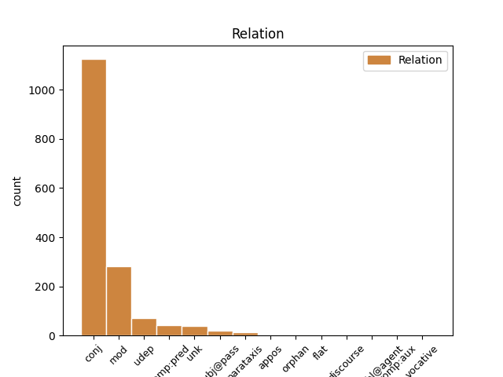
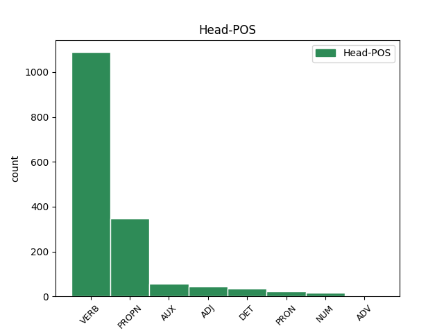
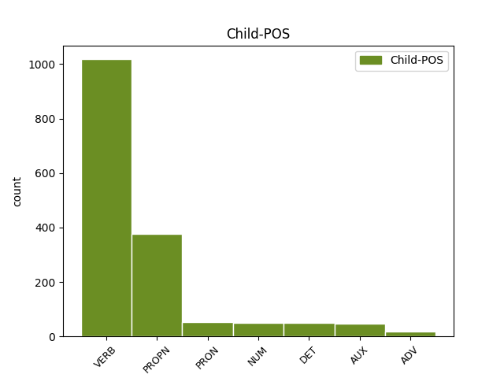

Distribution of features within this leaf



Agreement Rules sorted by frequency.
- When the dependent token is the conjunct(conj) of the head token, and the head token is VERB and the dependent token is VERB.
1 Paravojenské _ _ _ _ 0 _ _ _
2 oddiely _ _ _ _ 0 _ _ _
3 pritom _ _ _ _ 0 _ _ _
4 zabíjali zabíjať VERB VLepci+ Animacy=Inan|Aspect=Imp|Gender=Masc|Number=Plur|Polarity=Pos|Tense=Past|VerbForm=Part 0 _ _ _
5 a _ _ _ _ 0 _ _ _
6 vyháňali vyháňať VERB VLepci+ Animacy=Inan|Aspect=Imp|Gender=Masc|Number=Plur|Polarity=Pos|Tense=Past|VerbForm=Part 4 conj _ _
7 nesrbských _ _ _ _ 0 _ _ _
8 civilistov _ _ _ _ 0 _ _ _
9 . _ _ _ _ 0 _ _ _
1 FRANTIŠEK františek PROPN SSms1:r Animacy=Anim|Case=Nom|Gender=Masc|Number=Sing 2 mod _ _
2 PODHRADSKÝ podhradský PROPN SAms1:r Animacy=Anim|Case=Nom|Gender=Masc|Number=Sing 0 _ _ _
3 , _ _ _ _ 0 _ _ _
4 Ilava _ _ _ _ 0 _ _ _
1 JOZEF _ _ _ _ 0 _ _ _
2 HOZLÁR hozlár PROPN SSms1:r Animacy=Anim|Case=Nom|Gender=Masc|Number=Sing 0 _ _ _
3 , _ _ _ _ 0 _ _ _
4 Nové _ _ _ _ 0 _ _ _
5 Zámky Zámky PROPN SSip1:r Animacy=Inan|Case=Nom|Gender=Masc|Number=Plur 2 conj _ _
1 Nie _ _ _ _ 0 _ _ _
2 je _ _ _ _ 0 _ _ _
3 dobrý dobrý ADJ AAms1x Animacy=Anim|Case=Nom|Degree=Pos|Gender=Masc|Number=Sing 0 _ _ _
4 v _ _ _ _ 0 _ _ _
5 počtoch _ _ _ _ 0 _ _ _
6 , _ _ _ _ 0 _ _ _
7 a _ _ _ _ 0 _ _ _
8 preto _ _ _ _ 0 _ _ _
9 sa _ _ _ _ 0 _ _ _
10 často _ _ _ _ 0 _ _ _
11 mýlil mýliť VERB VLescm+ Animacy=Anim|Aspect=Imp|Gender=Masc|Number=Sing|Polarity=Pos|Tense=Past|VerbForm=Part 3 conj _ SpaceAfter=No
12 . _ _ _ _ 0 _ _ _
1 Lenže _ _ _ _ 0 _ _ _
2 leopard _ _ _ _ 0 _ _ _
3 Kerchaka _ _ _ _ 0 _ _ _
4 zranil zraniť VERB VLdscm+ Animacy=Anim|Aspect=Perf|Gender=Masc|Number=Sing|Polarity=Pos|Tense=Past|VerbForm=Part 0 _ _ _
5 a _ _ _ _ 0 _ _ _
6 zakrátko _ _ _ _ 0 _ _ _
7 mu _ _ _ _ 0 _ _ _
8 bol byť AUX VLescm+ Animacy=Anim|Aspect=Imp|Gender=Masc|Number=Sing|Polarity=Pos|Tense=Past|VerbForm=Part 4 conj _ _
9 vodca _ _ _ _ 0 _ _ _
10 goríl _ _ _ _ 0 _ _ _
11 vydaný _ _ _ _ 0 _ _ _
12 na _ _ _ _ 0 _ _ _
13 milosť _ _ _ _ 0 _ _ _
14 a _ _ _ _ 0 _ _ _
15 nemilosť _ _ _ _ 0 _ _ _
16 . _ _ _ _ 0 _ _ _
1 Terk _ _ _ _ 0 _ _ _
2 bežala _ _ _ _ 0 _ _ _
3 k _ _ _ _ 0 _ _ _
4 lagúne _ _ _ _ 0 _ _ _
5 a _ _ _ _ 0 _ _ _
6 vytiahla _ _ _ _ 0 _ _ _
7 Tarzana tarzan PROPN SSms4:r Animacy=Anim|Case=Acc|Gender=Masc|Number=Sing 0 _ _ _
8 , _ _ _ _ 0 _ _ _
9 ktorý _ _ _ _ 0 _ _ _
10 sa _ _ _ _ 0 _ _ _
11 poriadne _ _ _ _ 0 _ _ _
12 napil napiť VERB VLdscm+ Animacy=Anim|Aspect=Perf|Gender=Masc|Number=Sing|Polarity=Pos|Tense=Past|VerbForm=Part 7 mod _ _
13 vody _ _ _ _ 0 _ _ _
14 . _ _ _ _ 0 _ _ _
1 Zúčastniť _ _ _ _ 0 _ _ _
2 sa _ _ _ _ 0 _ _ _
3 mohol _ _ _ _ 0 _ _ _
4 každý každý DET PAms1 Animacy=Anim|Case=Nom|Gender=Masc|Number=Sing|PronType=Tot 0 _ _ _
5 , _ _ _ _ 0 _ _ _
6 kto _ _ _ _ 0 _ _ _
7 mal mať VERB VLescm+ Animacy=Anim|Aspect=Imp|Gender=Masc|Number=Sing|Polarity=Pos|Tense=Past|VerbForm=Part 4 mod _ _
8 krídla _ _ _ _ 0 _ _ _
9 . _ _ _ _ 0 _ _ _
1 Sama sám DET PFfs1 Case=Nom|Gender=Fem|Number=Sing|PronType=Emp 4 comp:pred _ _
2 sa _ _ _ _ 0 _ _ _
3 predsa _ _ _ _ 0 _ _ _
4 rozhodla rozhodnúť VERB VLdscf+ Aspect=Perf|Gender=Fem|Number=Sing|Polarity=Pos|Tense=Past|VerbForm=Part 0 _ _ _
5 , _ _ _ _ 0 _ _ _
6 že _ _ _ _ 0 _ _ _
7 opustí _ _ _ _ 0 _ _ _
8 družky _ _ _ _ 0 _ _ _
9 . _ _ _ _ 0 _ _ _
1 Jeho _ _ _ _ 0 _ _ _
2 pani _ _ _ _ 0 _ _ _
3 bola byť AUX VLescf+ Aspect=Imp|Gender=Fem|Number=Sing|Polarity=Pos|Tense=Past|VerbForm=Part 0 _ _ _
4 na _ _ _ _ 0 _ _ _
5 počudovanie _ _ _ _ 0 _ _ _
6 osa _ _ _ _ 0 _ _ _
7 a _ _ _ _ 0 _ _ _
8 mala mať VERB VLescf+ Aspect=Imp|Gender=Fem|Number=Sing|Polarity=Pos|Tense=Past|VerbForm=Part 3 conj _ _
9 veľmi _ _ _ _ 0 _ _ _
10 útly _ _ _ _ 0 _ _ _
11 driek _ _ _ _ 0 _ _ _
12 . _ _ _ _ 0 _ _ _
1 Raz raz ADV NSis4 Animacy=Inan|Case=Acc|Gender=Masc|Number=Sing|NumType=Mult 2 udep _ _
2 zaútočil zaútočiť VERB VLdscm+ Animacy=Anim|Aspect=Perf|Gender=Masc|Number=Sing|Polarity=Pos|Tense=Past|VerbForm=Part 0 _ _ _
3 na _ _ _ _ 0 _ _ _
4 tlupu _ _ _ _ 0 _ _ _
5 ich _ _ _ _ 0 _ _ _
6 odveký _ _ _ _ 0 _ _ _
7 nepriateľ _ _ _ _ 0 _ _ _
8 Sabor _ _ _ _ 0 _ _ _
9 . _ _ _ _ 0 _ _ _
1 Mám _ _ _ _ 0 _ _ _
2 osem _ _ _ _ 0 _ _ _
3 nôh _ _ _ _ 0 _ _ _
4 , _ _ _ _ 0 _ _ _
5 osem osem NUM NUns4 Case=Acc|Gender=Neut|Number=Sing 0 _ _ _
6 očí _ _ _ _ 0 _ _ _
7 a _ _ _ _ 0 _ _ _
8 sedem sedem NUM NUns4 Case=Acc|Gender=Neut|Number=Sing 5 conj _ _
9 chutí _ _ _ _ 0 _ _ _
10 . _ _ _ _ 0 _ _ _
1 Naozaj _ _ _ _ 0 _ _ _
2 , _ _ _ _ 0 _ _ _
3 bol byť AUX VLescm+ Animacy=Anim|Aspect=Imp|Gender=Masc|Number=Sing|Polarity=Pos|Tense=Past|VerbForm=Part 0 _ _ _
4 to _ _ _ _ 0 _ _ _
5 Chrabroš chrabroš PROPN SSms1:r Animacy=Anim|Case=Nom|Gender=Masc|Number=Sing 3 comp:pred _ SpaceAfter=No
6 . _ _ _ _ 0 _ _ _
1 V _ _ _ _ 0 _ _ _
2 tej _ _ _ _ 0 _ _ _
3 chvíli _ _ _ _ 0 _ _ _
4 zišiel _ _ _ _ 0 _ _ _
5 zo _ _ _ _ 0 _ _ _
6 svojho _ _ _ _ 0 _ _ _
7 ležoviska _ _ _ _ 0 _ _ _
8 na _ _ _ _ 0 _ _ _
9 strome _ _ _ _ 0 _ _ _
10 Baghíra _ _ _ _ 0 _ _ _
11 , _ _ _ _ 0 _ _ _
12 ktorý _ _ _ _ 0 _ _ _
13 pozorne _ _ _ _ 0 _ _ _
14 počúval _ _ _ _ 0 _ _ _
15 všetko všetko PRON PFns4 Case=Acc|Gender=Neut|Number=Sing|PronType=Tot 0 _ _ _
16 , _ _ _ _ 0 _ _ _
17 čo _ _ _ _ 0 _ _ _
18 sa _ _ _ _ 0 _ _ _
19 vravelo vravieť VERB VLescn+ Aspect=Imp|Gender=Neut|Number=Sing|Polarity=Pos|Tense=Past|VerbForm=Part 15 mod _ SpaceAfter=No
20 . _ _ _ _ 0 _ _ _
1 “ _ _ _ _ 0 _ _ _
2 To _ _ _ _ 0 _ _ _
3 by _ _ _ _ 0 _ _ _
4 bolo byť AUX VLescn+ Aspect=Imp|Gender=Neut|Number=Sing|Polarity=Pos|Tense=Past|VerbForm=Part 0 _ _ _
5 niečo niečo PRON PFns1 Case=Nom|Gender=Neut|Number=Sing|PronType=Ind 4 comp:pred _ _
6 pre _ _ _ _ 0 _ _ _
7 mňa _ _ _ _ 0 _ _ _
8 , _ _ _ _ 0 _ _ _
9 “ _ _ _ _ 0 _ _ _
10 vravel _ _ _ _ 0 _ _ _
11 si _ _ _ _ 0 _ _ _
12 . _ _ _ _ 0 _ _ _
1 A _ _ _ _ 0 _ _ _
2 premena _ _ _ _ 0 _ _ _
3 , _ _ _ _ 0 _ _ _
4 ktorá ktorý DET PAfs1 Case=Nom|Gender=Fem|Number=Sing|PronType=Int,Rel 8 subj@pass _ _
5 sa _ _ _ _ 0 _ _ _
6 s _ _ _ _ 0 _ _ _
7 ňou _ _ _ _ 0 _ _ _
8 odohrala odohrať VERB VLdscf+ Aspect=Perf|Gender=Fem|Number=Sing|Polarity=Pos|Tense=Past|VerbForm=Part 0 _ _ _
9 , _ _ _ _ 0 _ _ _
10 bola _ _ _ _ 0 _ _ _
11 ešte _ _ _ _ 0 _ _ _
12 prekvapujúcejšia _ _ _ _ 0 _ _ _
13 . _ _ _ _ 0 _ _ _
1 Vzala _ _ _ _ 0 _ _ _
2 handru _ _ _ _ 0 _ _ _
3 a _ _ _ _ 0 _ _ _
4 neznámeho _ _ _ _ 0 _ _ _
5 ňou ona PRON PFfs7 Case=Ins|Gender=Fem|Number=Sing|Person=3|PronType=Prs 6 udep _ _
6 poutierala poutierať VERB VLdscf+ Aspect=Perf|Gender=Fem|Number=Sing|Polarity=Pos|Tense=Past|VerbForm=Part 0 _ _ _
7 . _ _ _ _ 0 _ _ _
1 Mal _ _ _ _ 0 _ _ _
2 som _ _ _ _ 0 _ _ _
3 príležitosť _ _ _ _ 0 _ _ _
4 poznať _ _ _ _ 0 _ _ _
5 dievčinu _ _ _ _ 0 _ _ _
6 , _ _ _ _ 0 _ _ _
7 ktorá _ _ _ _ 0 _ _ _
8 sa _ _ _ _ 0 _ _ _
9 volala volať VERB VLescf+ Aspect=Imp|Gender=Fem|Number=Sing|Polarity=Pos|Tense=Past|VerbForm=Part 0 _ _ _
10 Lori lori PROPN SUfs1:r Case=Nom|Gender=Fem|Number=Sing 9 udep _ SpaceAfter=No
11 , _ _ _ _ 0 _ _ _
12 ale _ _ _ _ 0 _ _ _
13 ona _ _ _ _ 0 _ _ _
14 sa _ _ _ _ 0 _ _ _
15 stratila _ _ _ _ 0 _ _ _
16 . _ _ _ _ 0 _ _ _
1 Abu aba PROPN SSms1:r Animacy=Anim|Case=Nom|Gender=Masc|Number=Sing 4 subj@pass _ _
2 si _ _ _ _ 0 _ _ _
3 naradostene _ _ _ _ 0 _ _ _
4 pošúchal pošúchať VERB VLdscm+ Animacy=Anim|Aspect=Perf|Gender=Masc|Number=Sing|Polarity=Pos|Tense=Past|VerbForm=Part 0 _ _ _
5 ruky _ _ _ _ 0 _ _ _
6 . _ _ _ _ 0 _ _ _
1 Ku _ _ _ _ 0 _ _ _
2 koncu _ _ _ _ 0 _ _ _
3 svojho _ _ _ _ 0 _ _ _
4 života _ _ _ _ 0 _ _ _
5 ( _ _ _ _ 0 _ _ _
6 zomrel zomrieť VERB VLdscm+ Animacy=Anim|Aspect=Perf|Gender=Masc|Number=Sing|Polarity=Pos|Tense=Past|VerbForm=Part 11 parataxis _ _
7 r _ _ _ _ 0 _ _ _
8 . _ _ _ _ 0 _ _ _
9 1956 _ _ _ _ 0 _ _ _
10 ) _ _ _ _ 0 _ _ _
11 pôsobil pôsobiť VERB VLescm+ Animacy=Anim|Aspect=Imp|Gender=Masc|Number=Sing|Polarity=Pos|Tense=Past|VerbForm=Part 0 _ _ _
12 ako _ _ _ _ 0 _ _ _
13 predseda _ _ _ _ 0 _ _ _
14 tejto _ _ _ _ 0 _ _ _
15 organizácie _ _ _ _ 0 _ _ _
16 . _ _ _ _ 0 _ _ _
1 V _ _ _ _ 0 _ _ _
2 tej _ _ _ _ 0 _ _ _
3 chvíli _ _ _ _ 0 _ _ _
4 zišiel _ _ _ _ 0 _ _ _
5 zo _ _ _ _ 0 _ _ _
6 svojho _ _ _ _ 0 _ _ _
7 ležoviska _ _ _ _ 0 _ _ _
8 na _ _ _ _ 0 _ _ _
9 strome _ _ _ _ 0 _ _ _
10 Baghíra _ _ _ _ 0 _ _ _
11 , _ _ _ _ 0 _ _ _
12 ktorý _ _ _ _ 0 _ _ _
13 pozorne _ _ _ _ 0 _ _ _
14 počúval _ _ _ _ 0 _ _ _
15 všetko _ _ _ _ 0 _ _ _
16 , _ _ _ _ 0 _ _ _
17 čo čo PRON PFns1 Case=Nom|Gender=Neut|Number=Sing|PronType=Int,Rel 19 subj@pass _ _
18 sa _ _ _ _ 0 _ _ _
19 vravelo vravieť VERB VLescn+ Aspect=Imp|Gender=Neut|Number=Sing|Polarity=Pos|Tense=Past|VerbForm=Part 0 _ _ _
20 . _ _ _ _ 0 _ _ _
1 Takáto takýto DET PAfs1 Case=Nom|Gender=Fem|Number=Sing|PronType=Dem 2 comp:pred _ _
2 bola byť AUX VLescf+ Aspect=Imp|Gender=Fem|Number=Sing|Polarity=Pos|Tense=Past|VerbForm=Part 0 _ _ _
3 podstata _ _ _ _ 0 _ _ _
4 jeho _ _ _ _ 0 _ _ _
5 slov _ _ _ _ 0 _ _ _
6 , _ _ _ _ 0 _ _ _
7 ktoré _ _ _ _ 0 _ _ _
8 ma _ _ _ _ 0 _ _ _
9 rozčúlili _ _ _ _ 0 _ _ _
10 . _ _ _ _ 0 _ _ _
1 Bol _ _ _ _ 0 _ _ _
2 mučiteľ _ _ _ _ 0 _ _ _
3 , _ _ _ _ 0 _ _ _
4 bol _ _ _ _ 0 _ _ _
5 ochranca _ _ _ _ 0 _ _ _
6 , _ _ _ _ 0 _ _ _
7 bol byť AUX VLescm+ Animacy=Anim|Aspect=Imp|Gender=Masc|Number=Sing|Polarity=Pos|Tense=Past|VerbForm=Part 0 _ _ _
8 inkvizítor _ _ _ _ 0 _ _ _
9 , _ _ _ _ 0 _ _ _
10 bol byť AUX VLescm+ Animacy=Anim|Aspect=Imp|Gender=Masc|Number=Sing|Polarity=Pos|Tense=Past|VerbForm=Part 7 conj _ _
11 priateľ _ _ _ _ 0 _ _ _
12 . _ _ _ _ 0 _ _ _
1 Gazdinky _ _ _ _ 0 _ _ _
2 vyložili vyložiť VERB VLdpcf+ Aspect=Perf|Gender=Fem|Number=Plur|Polarity=Pos|Tense=Past|VerbForm=Part 0 _ _ _
3 do _ _ _ _ 0 _ _ _
4 okien _ _ _ _ 0 _ _ _
5 vankúše _ _ _ _ 0 _ _ _
6 , _ _ _ _ 0 _ _ _
7 Kasandra kasandra PROPN SSfs1:r Case=Nom|Gender=Fem|Number=Sing 2 conj _ _
8 zasa _ _ _ _ 0 _ _ _
9 medové _ _ _ _ 0 _ _ _
10 guľôčky _ _ _ _ 0 _ _ _
11 a _ _ _ _ 0 _ _ _
12 slečna _ _ _ _ 0 _ _ _
13 Hopka _ _ _ _ 0 _ _ _
14 usporiadala _ _ _ _ 0 _ _ _
15 na _ _ _ _ 0 _ _ _
16 čistinke _ _ _ _ 0 _ _ _
17 rannú _ _ _ _ 0 _ _ _
18 rozcvičku _ _ _ _ 0 _ _ _
19 . _ _ _ _ 0 _ _ _
1 Motýľ _ _ _ _ 0 _ _ _
2 Emanuel _ _ _ _ 0 _ _ _
3 poletoval _ _ _ _ 0 _ _ _
4 kdesi _ _ _ _ 0 _ _ _
5 nad _ _ _ _ 0 _ _ _
6 lúkami _ _ _ _ 0 _ _ _
7 a _ _ _ _ 0 _ _ _
8 Makulienka makulienka PROPN SSfs1:r Case=Nom|Gender=Fem|Number=Sing 0 _ _ _
9 ostala _ _ _ _ 0 _ _ _
10 doma _ _ _ _ 0 _ _ _
11 sama sám DET PFfs1 Case=Nom|Gender=Fem|Number=Sing|PronType=Emp 8 comp:pred _ SpaceAfter=No
12 . _ _ _ _ 0 _ _ _
1 To ten DET PFns1 Case=Nom|Gender=Neut|Number=Sing|PronType=Dem 0 _ _ _
2 nič nič PRON PFns1 Case=Nom|Gender=Neut|Number=Sing|PronType=Neg 1 unk _ SpaceAfter=No
3 . _ _ _ _ 0 _ _ _
1 “ _ _ _ _ 0 _ _ _
2 Barbie barbie PROPN SUfs1:r Case=Nom|Gender=Fem|Number=Sing 4 unk _ SpaceAfter=No
3 , _ _ _ _ 0 _ _ _
4 nevidela vidieť VERB VLescf- Aspect=Imp|Gender=Fem|Number=Sing|Polarity=Neg|Tense=Past|VerbForm=Part 0 _ _ _
5 si _ _ _ _ 0 _ _ _
6 Koru _ _ _ _ 0 _ _ _
7 ? _ _ _ _ 0 _ _ _
8 “ _ _ _ _ 0 _ _ _
9 zakričala _ _ _ _ 0 _ _ _
10 . _ _ _ _ 0 _ _ _
1 Aby _ _ _ _ 0 _ _ _
2 anonym _ _ _ _ 0 _ _ _
3 urobil _ _ _ _ 0 _ _ _
4 svoje _ _ _ _ 0 _ _ _
5 obvinenie _ _ _ _ 0 _ _ _
6 dôveryhodným _ _ _ _ 0 _ _ _
7 , _ _ _ _ 0 _ _ _
8 uvádzal _ _ _ _ 0 _ _ _
9 iniciálky _ _ _ _ 0 _ _ _
10 tej tá DET PFfs2 Case=Gen|Gender=Fem|Number=Sing|PronType=Dem 0 _ _ _
11 ‐ _ _ _ _ 0 _ _ _
12 ktorej ktorý DET PAfs2 Case=Gen|Gender=Fem|Number=Sing|PronType=Int,Rel 10 conj _ _
13 ženy _ _ _ _ 0 _ _ _
14 a _ _ _ _ 0 _ _ _
15 z _ _ _ _ 0 _ _ _
16 tohto _ _ _ _ 0 _ _ _
17 hľadiska _ _ _ _ 0 _ _ _
18 mala _ _ _ _ 0 _ _ _
19 Marga _ _ _ _ 0 _ _ _
20 dôvod _ _ _ _ 0 _ _ _
21 podozrievať _ _ _ _ 0 _ _ _
22 ma _ _ _ _ 0 _ _ _
23 . _ _ _ _ 0 _ _ _
1 Keďže _ _ _ _ 0 _ _ _
2 kníh _ _ _ _ 0 _ _ _
3 , _ _ _ _ 0 _ _ _
4 ktoré _ _ _ _ 0 _ _ _
5 mi _ _ _ _ 0 _ _ _
6 zostali _ _ _ _ 0 _ _ _
7 , _ _ _ _ 0 _ _ _
8 nebolo byť VERB VLescn- Aspect=Imp|Gender=Neut|Number=Sing|Polarity=Neg|Tense=Past|VerbForm=Part 0 _ _ _
9 ktovieako _ _ _ _ 0 _ _ _
10 veľa veľa NUM NUns1 Case=Nom|Gender=Neut|Number=Sing 8 udep _ SpaceAfter=No
11 , _ _ _ _ 0 _ _ _
12 vrece _ _ _ _ 0 _ _ _
13 bude _ _ _ _ 0 _ _ _
14 ťažšie _ _ _ _ 0 _ _ _
15 , _ _ _ _ 0 _ _ _
16 ak _ _ _ _ 0 _ _ _
17 pridám _ _ _ _ 0 _ _ _
18 rukopisy _ _ _ _ 0 _ _ _
19 svojich _ _ _ _ 0 _ _ _
20 scenárov _ _ _ _ 0 _ _ _
21 . _ _ _ _ 0 _ _ _
1 “ _ _ _ _ 0 _ _ _
2 Tu _ _ _ _ 0 _ _ _
3 býva _ _ _ _ 0 _ _ _
4 jeden jeden NUM NFms1 Animacy=Anim|Case=Nom|Gender=Masc|Number=Sing 6 mod _ _
5 môj _ _ _ _ 0 _ _ _
6 známy známy ADJ AAms1x Animacy=Anim|Case=Nom|Degree=Pos|Gender=Masc|Number=Sing 0 _ _ _
7 a _ _ _ _ 0 _ _ _
8 veľmi _ _ _ _ 0 _ _ _
9 rád _ _ _ _ 0 _ _ _
10 prijíma _ _ _ _ 0 _ _ _
11 návštevy _ _ _ _ 0 _ _ _
12 . _ _ _ _ 0 _ _ _
13 “ _ _ _ _ 0 _ _ _
1 Bucka bucka PROPN SSfs1:r Case=Nom|Gender=Fem|Number=Sing 0 _ _ _
2 ( _ _ _ _ 0 _ _ _
3 Petronila petronila PROPN SSfs1:r Case=Nom|Gender=Fem|Number=Sing 1 flat _ SpaceAfter=No
4 ) _ _ _ _ 0 _ _ _
5 zalomila _ _ _ _ 0 _ _ _
6 krídlami _ _ _ _ 0 _ _ _
7 . _ _ _ _ 0 _ _ _
1 Pavol pavol PROPN SSms1:r Animacy=Anim|Case=Nom|Gender=Masc|Number=Sing 0 _ _ _
2 , _ _ _ _ 0 _ _ _
3 ktorý _ _ _ _ 0 _ _ _
4 bol byť AUX VLescm+ Animacy=Anim|Aspect=Imp|Gender=Masc|Number=Sing|Polarity=Pos|Tense=Past|VerbForm=Part 1 mod _ _
5 do _ _ _ _ 0 _ _ _
6 Fridy _ _ _ _ 0 _ _ _
7 zaľúbený _ _ _ _ 0 _ _ _
8 až _ _ _ _ 0 _ _ _
9 po _ _ _ _ 0 _ _ _
10 uši _ _ _ _ 0 _ _ _
11 , _ _ _ _ 0 _ _ _
12 sa _ _ _ _ 0 _ _ _
13 zľakol _ _ _ _ 0 _ _ _
14 a _ _ _ _ 0 _ _ _
15 začal _ _ _ _ 0 _ _ _
16 ju _ _ _ _ 0 _ _ _
17 hľadať _ _ _ _ 0 _ _ _
18 . _ _ _ _ 0 _ _ _
1 Ten _ _ _ _ 0 _ _ _
2 , _ _ _ _ 0 _ _ _
3 ktorý _ _ _ _ 0 _ _ _
4 pod _ _ _ _ 0 _ _ _
5 jagavosť _ _ _ _ 0 _ _ _
6 tém _ _ _ _ 0 _ _ _
7 hodnú _ _ _ _ 0 _ _ _
8 bestsellerov _ _ _ _ 0 _ _ _
9 rozostavil _ _ _ _ 0 _ _ _
10 pasce _ _ _ _ 0 _ _ _
11 , _ _ _ _ 0 _ _ _
12 v _ _ _ _ 0 _ _ _
13 ktorých _ _ _ _ 0 _ _ _
14 uviazol uviaznuť VERB VLdscm+ Animacy=Anim|Aspect=Perf|Gender=Masc|Number=Sing|Polarity=Pos|Tense=Past|VerbForm=Part 0 _ _ _
15 sám sám DET PFms1 Animacy=Anim|Case=Nom|Gender=Masc|Number=Sing|PronType=Emp 14 udep _ SpaceAfter=No
16 . _ _ _ _ 0 _ _ _
1 Počas _ _ _ _ 0 _ _ _
2 výletu _ _ _ _ 0 _ _ _
3 bolo byť AUX VLescn+ Aspect=Imp|Gender=Neut|Number=Sing|Polarity=Pos|Tense=Past|VerbForm=Part 0 _ _ _
4 ponechané _ _ _ _ 0 _ _ _
5 dosť dosť NUM NUns1 Case=Nom|Gender=Neut|Number=Sing 3 subj@pass _ _
6 času _ _ _ _ 0 _ _ _
7 na _ _ _ _ 0 _ _ _
8 voľno _ _ _ _ 0 _ _ _
9 a _ _ _ _ 0 _ _ _
10 osobné _ _ _ _ 0 _ _ _
11 rozhovory _ _ _ _ 0 _ _ _
12 . _ _ _ _ 0 _ _ _
1 A _ _ _ _ 0 _ _ _
2 tu _ _ _ _ 0 _ _ _
3 či _ _ _ _ 0 _ _ _
4 inde _ _ _ _ 0 _ _ _
5 sa _ _ _ _ 0 _ _ _
6 v _ _ _ _ 0 _ _ _
7 úplnej _ _ _ _ 0 _ _ _
8 tajnosti _ _ _ _ 0 _ _ _
9 nachádzali _ _ _ _ 0 _ _ _
10 riadiace _ _ _ _ 0 _ _ _
11 mozgy _ _ _ _ 0 _ _ _
12 , _ _ _ _ 0 _ _ _
13 ktoré _ _ _ _ 0 _ _ _
14 koordinovali _ _ _ _ 0 _ _ _
15 toto _ _ _ _ 0 _ _ _
16 úsilie _ _ _ _ 0 _ _ _
17 a _ _ _ _ 0 _ _ _
18 určovali určovať VERB VLepci+ Animacy=Inan|Aspect=Imp|Gender=Masc|Number=Plur|Polarity=Pos|Tense=Past|VerbForm=Part 0 _ _ _
19 politickú _ _ _ _ 0 _ _ _
20 líniu _ _ _ _ 0 _ _ _
21 : _ _ _ _ 0 _ _ _
22 rozhodovali rozhodovať VERB VLepci+ Animacy=Inan|Aspect=Imp|Gender=Masc|Number=Plur|Polarity=Pos|Tense=Past|VerbForm=Part 18 appos _ _
23 o _ _ _ _ 0 _ _ _
24 tom _ _ _ _ 0 _ _ _
25 , _ _ _ _ 0 _ _ _
26 že _ _ _ _ 0 _ _ _
27 tento _ _ _ _ 0 _ _ _
28 fragment _ _ _ _ 0 _ _ _
29 minulosti _ _ _ _ 0 _ _ _
30 sa _ _ _ _ 0 _ _ _
31 zachová _ _ _ _ 0 _ _ _
32 , _ _ _ _ 0 _ _ _
33 tento _ _ _ _ 0 _ _ _
34 sa _ _ _ _ 0 _ _ _
35 sfalšuje _ _ _ _ 0 _ _ _
36 a _ _ _ _ 0 _ _ _
37 ďalší _ _ _ _ 0 _ _ _
38 prestane _ _ _ _ 0 _ _ _
39 jestvovať _ _ _ _ 0 _ _ _
40 . _ _ _ _ 0 _ _ _
1 Prvý prvý ADJ NAms1 Animacy=Anim|Case=Nom|Gender=Masc|Number=Sing|NumType=Ord 0 _ _ _
2 bol _ _ _ _ 0 _ _ _
3 Zhlúpnutý _ _ _ _ 0 _ _ _
4 Sokrates _ _ _ _ 0 _ _ _
5 , _ _ _ _ 0 _ _ _
6 druhý _ _ _ _ 0 _ _ _
7 bol byť AUX VLescm+ Animacy=Anim|Aspect=Imp|Gender=Masc|Number=Sing|Polarity=Pos|Tense=Past|VerbForm=Part 1 conj _ _
8 Sergej _ _ _ _ 0 _ _ _
9 . _ _ _ _ 0 _ _ _
1 Dupot _ _ _ _ 0 _ _ _
2 za _ _ _ _ 0 _ _ _
3 Ferdom _ _ _ _ 0 _ _ _
4 neutíchal _ _ _ _ 0 _ _ _
5 a _ _ _ _ 0 _ _ _
6 chodba _ _ _ _ 0 _ _ _
7 pred _ _ _ _ 0 _ _ _
8 ním _ _ _ _ 0 _ _ _
9 sa _ _ _ _ 0 _ _ _
10 akoby _ _ _ _ 0 _ _ _
11 z _ _ _ _ 0 _ _ _
12 ničoho nič PRON PFns2 Case=Gen|Gender=Neut|Number=Sing|PronType=Neg 0 _ _ _
13 nič nič PRON PFns1 Case=Nom|Gender=Neut|Number=Sing|PronType=Neg 12 mod _ _
14 končila _ _ _ _ 0 _ _ _
15 . _ _ _ _ 0 _ _ _
1 Bol byť VERB VLescm+ Animacy=Anim|Aspect=Imp|Gender=Masc|Number=Sing|Polarity=Pos|Tense=Past|VerbForm=Part 0 _ _ _
2 na _ _ _ _ 0 _ _ _
3 slnku _ _ _ _ 0 _ _ _
4 , _ _ _ _ 0 _ _ _
5 oni on PRON PFmp1 Animacy=Anim|Case=Nom|Gender=Masc|Number=Plur|Person=3|PronType=Prs 1 conj _ _
6 v _ _ _ _ 0 _ _ _
7 tieni _ _ _ _ 0 _ _ _
8 . _ _ _ _ 0 _ _ _
1 Nič nič PRON PFns4 Case=Acc|Gender=Neut|Number=Sing|PronType=Neg 0 _ _ _
2 viac viac NUM NUns4 Case=Acc|Gender=Neut|Number=Sing 1 mod _ SpaceAfter=No
3 . _ _ _ _ 0 _ _ _
1 Raz raz ADV NSis1 Animacy=Inan|Case=Nom|Gender=Masc|Number=Sing|NumType=Mult 0 _ _ _
2 , _ _ _ _ 0 _ _ _
3 dva dva NUM NNip1 Animacy=Inan|Case=Nom|Gender=Masc|Number=Plur 1 conj _ SpaceAfter=No
4 ! _ _ _ _ 0 _ _ _
1 Keby _ _ _ _ 0 _ _ _
2 som _ _ _ _ 0 _ _ _
3 bol _ _ _ _ 0 _ _ _
4 prehltol _ _ _ _ 0 _ _ _
5 tú _ _ _ _ 0 _ _ _
6 návnadu _ _ _ _ 0 _ _ _
7 , _ _ _ _ 0 _ _ _
8 moje _ _ _ _ 0 _ _ _
9 postavy _ _ _ _ 0 _ _ _
10 by _ _ _ _ 0 _ _ _
11 ma _ _ _ _ 0 _ _ _
12 boli byť AUX VLepcf+ Aspect=Imp|Gender=Fem|Number=Plur|Polarity=Pos|Tense=Past|VerbForm=Part 0 _ _ _
13 priviedli priviesť VERB VLdpcf+ Aspect=Perf|Gender=Fem|Number=Plur|Polarity=Pos|Tense=Past|VerbForm=Part 12 comp:aux _ _
14 do _ _ _ _ 0 _ _ _
15 hrobu _ _ _ _ 0 _ _ _
16 . _ _ _ _ 0 _ _ _
1 Našli _ _ _ _ 0 _ _ _
2 cestu _ _ _ _ 0 _ _ _
3 do _ _ _ _ 0 _ _ _
4 tajnej _ _ _ _ 0 _ _ _
5 vežičky _ _ _ _ 0 _ _ _
6 a _ _ _ _ 0 _ _ _
7 v _ _ _ _ 0 _ _ _
8 nej ona PRON PFfs6 Case=Loc|Gender=Fem|Number=Sing|Person=3|PronType=Prs 0 _ _ _
9 Kráľovnú kráľovná PROPN SFfs4:r Case=Acc|Gender=Fem|Number=Sing 8 orphan _ _
10 zla _ _ _ _ 0 _ _ _
11 . _ _ _ _ 0 _ _ _
1 Potom _ _ _ _ 0 _ _ _
2 prišiel _ _ _ _ 0 _ _ _
3 koniec _ _ _ _ 0 _ _ _
4 vojny _ _ _ _ 0 _ _ _
5 , _ _ _ _ 0 _ _ _
6 bolo byť AUX VLescn+ Aspect=Imp|Gender=Neut|Number=Sing|Polarity=Pos|Tense=Past|VerbForm=Part 0 _ _ _
7 obnovené _ _ _ _ 0 _ _ _
8 Československo československo PROPN SSns1:r Case=Nom|Gender=Neut|Number=Sing 6 subj@pass _ SpaceAfter=No
9 , _ _ _ _ 0 _ _ _
10 začali _ _ _ _ 0 _ _ _
11 sa _ _ _ _ 0 _ _ _
12 celkom _ _ _ _ 0 _ _ _
13 iné _ _ _ _ 0 _ _ _
14 pomery _ _ _ _ 0 _ _ _
15 . _ _ _ _ 0 _ _ _
1 Roku _ _ _ _ 0 _ _ _
2 1095 _ _ _ _ 0 _ _ _
3 bol _ _ _ _ 0 _ _ _
4 obliehaný obliehaný ADJ Gtis1x Animacy=Inan|Case=Nom|Degree=Pos|Gender=Masc|Number=Sing|Polarity=Pos|VerbForm=Part|Voice=Pass 0 _ _ _
5 svojim _ _ _ _ 0 _ _ _
6 bratom _ _ _ _ 0 _ _ _
7 Olegom oleg PROPN SSms7:r Animacy=Anim|Case=Ins|Gender=Masc|Number=Sing 4 comp:obl@agent _ SpaceAfter=No
8 , _ _ _ _ 0 _ _ _
9 V _ _ _ _ 0 _ _ _
10 . _ _ _ _ 0 _ _ _
11 Monomachom _ _ _ _ 0 _ _ _
12 a _ _ _ _ 0 _ _ _
13 Svjatopolkom _ _ _ _ 0 _ _ _
14 Izjaslavičom _ _ _ _ 0 _ _ _
15 . _ _ _ _ 0 _ _ _
1 Štyridsať štyridsať NUM NUns1 Case=Nom|Gender=Neut|Number=Sing 0 _ _ _
2 dva dva NUM NNns1 Case=Nom|Gender=Neut|Number=Sing 1 mod _ _
3 takýchto _ _ _ _ 0 _ _ _
4 odliatkov _ _ _ _ 0 _ _ _
5 bolo _ _ _ _ 0 _ _ _
6 poslaných _ _ _ _ 0 _ _ _
7 do _ _ _ _ 0 _ _ _
8 Moskvy _ _ _ _ 0 _ _ _
9 , _ _ _ _ 0 _ _ _
10 kde _ _ _ _ 0 _ _ _
11 ich _ _ _ _ 0 _ _ _
12 skúmal _ _ _ _ 0 _ _ _
13 I _ _ _ _ 0 _ _ _
14 . _ _ _ _ 0 _ _ _
15 A _ _ _ _ 0 _ _ _
16 . _ _ _ _ 0 _ _ _
17 Ščepkin _ _ _ _ 0 _ _ _
18 , _ _ _ _ 0 _ _ _
19 autor _ _ _ _ 0 _ _ _
20 prvej _ _ _ _ 0 _ _ _
21 práce _ _ _ _ 0 _ _ _
22 o _ _ _ _ 0 _ _ _
23 nich _ _ _ _ 0 _ _ _
24 . _ _ _ _ 0 _ _ _
1 Petrovi peter PROPN SSms3:r Animacy=Anim|Case=Dat|Gender=Masc|Number=Sing 0 _ _ _
2 Tvorjata tvorjata PROPN SSms1:r Animacy=Anim|Case=Nom|Gender=Masc|Number=Sing 1 unk _ _
3 / _ _ _ _ 0 _ _ _
4 list _ _ _ _ 0 _ _ _
5 dvoch _ _ _ _ 0 _ _ _
6 spolupracovníkov _ _ _ _ 0 _ _ _
7 / _ _ _ _ 0 _ _ _
1 Dôležitejším _ _ _ _ 0 _ _ _
2 znakom _ _ _ _ 0 _ _ _
3 oboch _ _ _ _ 0 _ _ _
4 kategórií _ _ _ _ 0 _ _ _
5 šamanov _ _ _ _ 0 _ _ _
6 je _ _ _ _ 0 _ _ _
7 , _ _ _ _ 0 _ _ _
8 že _ _ _ _ 0 _ _ _
9 úspech _ _ _ _ 0 _ _ _
10 ich _ _ _ _ 0 _ _ _
11 činov _ _ _ _ 0 _ _ _
12 nezávisí _ _ _ _ 0 _ _ _
13 od _ _ _ _ 0 _ _ _
14 toho _ _ _ _ 0 _ _ _
15 , _ _ _ _ 0 _ _ _
16 akú _ _ _ _ 0 _ _ _
17 obetu _ _ _ _ 0 _ _ _
18 bohu _ _ _ _ 0 _ _ _
19 prinesú _ _ _ _ 0 _ _ _
20 , _ _ _ _ 0 _ _ _
21 ale _ _ _ _ 0 _ _ _
22 od _ _ _ _ 0 _ _ _
23 toho _ _ _ _ 0 _ _ _
24 v _ _ _ _ 0 _ _ _
25 akom _ _ _ _ 0 _ _ _
26 vzťahu _ _ _ _ 0 _ _ _
27 sú _ _ _ _ 0 _ _ _
28 oni on PRON PFmp1 Animacy=Anim|Case=Nom|Gender=Masc|Number=Plur|Person=3|PronType=Prs 0 _ _ _
29 sami sám DET PFmp1 Animacy=Anim|Case=Nom|Gender=Masc|Number=Plur|PronType=Emp 28 comp:pred _ _
30 s _ _ _ _ 0 _ _ _
31 bohmi _ _ _ _ 0 _ _ _
32 — _ _ _ _ 0 _ _ _
33 tj _ _ _ _ 0 _ _ _
34 . _ _ _ _ 0 _ _ _
35 od _ _ _ _ 0 _ _ _
36 ich _ _ _ _ 0 _ _ _
37 schopností _ _ _ _ 0 _ _ _
38 . _ _ _ _ 0 _ _ _
1 “ _ _ _ _ 0 _ _ _
2 Všetci všetok DET PFmp1 Animacy=Anim|Case=Nom|Gender=Masc|Number=Plur|PronType=Tot 5 unk _ SpaceAfter=No
3 ? _ _ _ _ 0 _ _ _
4 “ _ _ _ _ 0 _ _ _
5 zakričal zakričať VERB VLdscm+ Animacy=Anim|Aspect=Perf|Gender=Masc|Number=Sing|Polarity=Pos|Tense=Past|VerbForm=Part 0 _ _ _
6 Rýchlik _ _ _ _ 0 _ _ _
7 . _ _ _ _ 0 _ _ _
1 “ _ _ _ _ 0 _ _ _
2 Asi _ _ _ _ 0 _ _ _
3 tri tri NUM NNip4 Animacy=Inan|Case=Acc|Gender=Masc|Number=Plur 6 unk _ SpaceAfter=No
4 , _ _ _ _ 0 _ _ _
5 “ _ _ _ _ 0 _ _ _
6 odvetil odvetiť VERB VLdscm+ Animacy=Anim|Aspect=Perf|Gender=Masc|Number=Sing|Polarity=Pos|Tense=Past|VerbForm=Part 0 _ _ _
7 Rýchlik _ _ _ _ 0 _ _ _
8 . _ _ _ _ 0 _ _ _
1 Všetci všetok DET PFmp1 Animacy=Anim|Case=Nom|Gender=Masc|Number=Plur|PronType=Tot 0 _ _ _
2 traja tri NUM NNmp1 Animacy=Anim|Case=Nom|Gender=Masc|Number=Plur 1 mod _ _
3 sme _ _ _ _ 0 _ _ _
4 sa _ _ _ _ 0 _ _ _
5 hystericky _ _ _ _ 0 _ _ _
6 rehotali _ _ _ _ 0 _ _ _
7 na _ _ _ _ 0 _ _ _
8 pozadí _ _ _ _ 0 _ _ _
9 čudných _ _ _ _ 0 _ _ _
10 tropických _ _ _ _ 0 _ _ _
11 rastlín _ _ _ _ 0 _ _ _
12 v _ _ _ _ 0 _ _ _
13 plastových _ _ _ _ 0 _ _ _
14 črepníkoch _ _ _ _ 0 _ _ _
15 . _ _ _ _ 0 _ _ _
1 “ _ _ _ _ 0 _ _ _
2 Bola _ _ _ _ 0 _ _ _
3 si _ _ _ _ 0 _ _ _
4 úžasná úžasný ADJ AAfs1x Case=Nom|Degree=Pos|Gender=Fem|Number=Sing 0 _ _ _
5 , _ _ _ _ 0 _ _ _
6 Amy amy PROPN SUfs1:r Case=Nom|Gender=Fem|Number=Sing 4 unk _ SpaceAfter=No
7 ! _ _ _ _ 0 _ _ _
1 Nimi on PRON PFmp7 Animacy=Anim|Case=Ins|Gender=Masc|Number=Plur|Person=3|PronType=Prs 2 udep _ _
2 vysvätení vysvätený ADJ Gtmp1x Animacy=Anim|Case=Nom|Degree=Pos|Gender=Masc|Number=Plur|Polarity=Pos|VerbForm=Part|Voice=Pass 0 _ _ _
3 kňazi _ _ _ _ 0 _ _ _
4 teda _ _ _ _ 0 _ _ _
5 nie _ _ _ _ 0 _ _ _
6 sú _ _ _ _ 0 _ _ _
7 právoplatne _ _ _ _ 0 _ _ _
8 vysvätenými _ _ _ _ 0 _ _ _
9 a _ _ _ _ 0 _ _ _
10 nemôžu _ _ _ _ 0 _ _ _
11 teda _ _ _ _ 0 _ _ _
12 veriacim _ _ _ _ 0 _ _ _
13 sprostredkovať _ _ _ _ 0 _ _ _
14 dary _ _ _ _ 0 _ _ _
15 Ducha _ _ _ _ 0 _ _ _
16 Svätého _ _ _ _ 0 _ _ _
17 . _ _ _ _ 0 _ _ _
1 Viac viac NUM NUns4 Case=Acc|Gender=Neut|Number=Sing 0 _ _ _
2 ich ono PRON PFnp2 Case=Gen|Gender=Neut|Number=Plur|Person=3|PronType=Prs 1 mod _ _
3 je _ _ _ _ 0 _ _ _
4 , _ _ _ _ 0 _ _ _
5 pochopiteľne _ _ _ _ 0 _ _ _
6 , _ _ _ _ 0 _ _ _
7 v _ _ _ _ 0 _ _ _
8 zbierkach _ _ _ _ 0 _ _ _
9 z _ _ _ _ 0 _ _ _
10 reformného _ _ _ _ 0 _ _ _
11 obdobia _ _ _ _ 0 _ _ _
12 . _ _ _ _ 0 _ _ _
1 " _ _ _ _ 0 _ _ _
2 Niekedy _ _ _ _ 0 _ _ _
3 , _ _ _ _ 0 _ _ _
4 " _ _ _ _ 0 _ _ _
5 poznamenala _ _ _ _ 0 _ _ _
6 , _ _ _ _ 0 _ _ _
7 " _ _ _ _ 0 _ _ _
8 pohrozia _ _ _ _ 0 _ _ _
9 človeku _ _ _ _ 0 _ _ _
10 niečím niečo PRON PFns7 Case=Ins|Gender=Neut|Number=Sing|PronType=Ind 0 _ _ _
11 -- _ _ _ _ 0 _ _ _
12 niečím niečo PRON PFns7 Case=Ins|Gender=Neut|Number=Sing|PronType=Ind 10 appos _ SpaceAfter=No
13 , _ _ _ _ 0 _ _ _
14 čomu _ _ _ _ 0 _ _ _
15 nedokáže _ _ _ _ 0 _ _ _
16 vzdorovať _ _ _ _ 0 _ _ _
17 , _ _ _ _ 0 _ _ _
18 na _ _ _ _ 0 _ _ _
19 čo _ _ _ _ 0 _ _ _
20 nedokáže _ _ _ _ 0 _ _ _
21 ani _ _ _ _ 0 _ _ _
22 pomyslieť _ _ _ _ 0 _ _ _
23 . _ _ _ _ 0 _ _ _
1 " _ _ _ _ 0 _ _ _
2 Nič nič PRON PFns1 Case=Nom|Gender=Neut|Number=Sing|PronType=Neg 0 _ _ _
3 to to DET PFns1 Case=Nom|Gender=Neut|Number=Sing|PronType=Dem 2 unk _ SpaceAfter=No
4 , _ _ _ _ 0 _ _ _
5 drahý _ _ _ _ 0 _ _ _
6 . _ _ _ _ 0 _ _ _
1 Kúsok _ _ _ _ 0 _ _ _
2 chleba _ _ _ _ 0 _ _ _
3 ešte _ _ _ _ 0 _ _ _
4 stále _ _ _ _ 0 _ _ _
5 ležal ležať VERB VLesci+ Animacy=Inan|Aspect=Imp|Gender=Masc|Number=Sing|Polarity=Pos|Tense=Past|VerbForm=Part 0 _ _ _
6 tam _ _ _ _ 0 _ _ _
7 , _ _ _ _ 0 _ _ _
8 kam _ _ _ _ 0 _ _ _
9 ho _ _ _ _ 0 _ _ _
10 odhodil odhodiť VERB VLdscm+ Animacy=Anim|Aspect=Perf|Gender=Masc|Number=Sing|Polarity=Pos|Tense=Past|VerbForm=Part 5 mod _ _
11 muž _ _ _ _ 0 _ _ _
12 bez _ _ _ _ 0 _ _ _
13 brady _ _ _ _ 0 _ _ _
14 . _ _ _ _ 0 _ _ _
1 On _ _ _ _ 0 _ _ _
2 a _ _ _ _ 0 _ _ _
3 zopár _ _ _ _ 0 _ _ _
4 jemu on PRON PFms3 Animacy=Anim|Case=Dat|Gender=Masc|Number=Sing|Person=3|PronType=Prs 5 mod _ _
5 podobných podobný ADJ AAmp2x Animacy=Anim|Case=Gen|Degree=Pos|Gender=Masc|Number=Plur 0 _ _ _
6 boli _ _ _ _ 0 _ _ _
7 poslednými _ _ _ _ 0 _ _ _
8 živými _ _ _ _ 0 _ _ _
9 spojovacími _ _ _ _ 0 _ _ _
10 článkami _ _ _ _ 0 _ _ _
11 so _ _ _ _ 0 _ _ _
12 zašlým _ _ _ _ 0 _ _ _
13 kapitalizmom _ _ _ _ 0 _ _ _
14 . _ _ _ _ 0 _ _ _
1 Miestnosť _ _ _ _ 0 _ _ _
2 bola _ _ _ _ 0 _ _ _
3 priveľmi _ _ _ _ 0 _ _ _
4 stiesnená _ _ _ _ 0 _ _ _
5 , _ _ _ _ 0 _ _ _
6 lebo _ _ _ _ 0 _ _ _
7 všetky _ _ _ _ 0 _ _ _
8 steny _ _ _ _ 0 _ _ _
9 dookola _ _ _ _ 0 _ _ _
10 podopierali _ _ _ _ 0 _ _ _
11 nespočítateľné _ _ _ _ 0 _ _ _
12 množstvo _ _ _ _ 0 _ _ _
13 zaprášených _ _ _ _ 0 _ _ _
14 rámov _ _ _ _ 0 _ _ _
15 naukladaných naukladaný ADJ Gtip2x Animacy=Inan|Case=Gen|Degree=Pos|Gender=Masc|Number=Plur|Polarity=Pos|VerbForm=Part|Voice=Pass 0 _ _ _
16 jeden jeden NUM NFis1 Animacy=Inan|Case=Nom|Gender=Masc|Number=Sing 15 udep _ _
17 na _ _ _ _ 0 _ _ _
18 druhý _ _ _ _ 0 _ _ _
19 . _ _ _ _ 0 _ _ _
1 Pokúšal pokúšať VERB VLescm+ Animacy=Anim|Aspect=Imp|Gender=Masc|Number=Sing|Polarity=Pos|Tense=Past|VerbForm=Part 0 _ _ _
2 sa _ _ _ _ 0 _ _ _
3 jej _ _ _ _ 0 _ _ _
4 to _ _ _ _ 0 _ _ _
5 vysvetliť _ _ _ _ 0 _ _ _
6 tak _ _ _ _ 0 _ _ _
7 , _ _ _ _ 0 _ _ _
8 aby _ _ _ _ 0 _ _ _
9 pochopila _ _ _ _ 0 _ _ _
10 . _ _ _ _ 0 _ _ _
11 " _ _ _ _ 0 _ _ _
12 Toto _ _ _ _ 0 _ _ _
13 bol byť AUX VLesci+ Animacy=Inan|Aspect=Imp|Gender=Masc|Number=Sing|Polarity=Pos|Tense=Past|VerbForm=Part 1 parataxis _ _
14 výnimočný _ _ _ _ 0 _ _ _
15 prípad _ _ _ _ 0 _ _ _
16 . _ _ _ _ 0 _ _ _
1 On on PRON PFms1:r Animacy=Anim|Case=Nom|Gender=Masc|Number=Sing|Person=3|PronType=Prs 0 _ _ _
2 – _ _ _ _ 0 _ _ _
3 Kristus kristus PROPN SSms1:r Animacy=Anim|Case=Nom|Gender=Masc|Number=Sing 1 flat _ _
4 je _ _ _ _ 0 _ _ _
5 novou _ _ _ _ 0 _ _ _
6 možnosťou _ _ _ _ 0 _ _ _
7 orientácie _ _ _ _ 0 _ _ _
8 , _ _ _ _ 0 _ _ _
9 cestou _ _ _ _ 0 _ _ _
10 znovuzrodenia _ _ _ _ 0 _ _ _
11 , _ _ _ _ 0 _ _ _
12 novej _ _ _ _ 0 _ _ _
13 nádeje _ _ _ _ 0 _ _ _
14 a _ _ _ _ 0 _ _ _
15 lásky _ _ _ _ 0 _ _ _
16 , _ _ _ _ 0 _ _ _
17 ktorá _ _ _ _ 0 _ _ _
18 hľadá _ _ _ _ 0 _ _ _
19 tých _ _ _ _ 0 _ _ _
20 , _ _ _ _ 0 _ _ _
21 ktorí _ _ _ _ 0 _ _ _
22 sú _ _ _ _ 0 _ _ _
23 na _ _ _ _ 0 _ _ _
24 ceste _ _ _ _ 0 _ _ _
25 rezignácie _ _ _ _ 0 _ _ _
26 , _ _ _ _ 0 _ _ _
27 ubití _ _ _ _ 0 _ _ _
28 ľudským _ _ _ _ 0 _ _ _
29 egoizmom _ _ _ _ 0 _ _ _
30 a _ _ _ _ 0 _ _ _
31 hriechom _ _ _ _ 0 _ _ _
32 . _ _ _ _ 0 _ _ _
1 Marginým _ _ _ _ 0 _ _ _
2 svätcom _ _ _ _ 0 _ _ _
3 bol _ _ _ _ 0 _ _ _
4 taliansky _ _ _ _ 0 _ _ _
5 spevák _ _ _ _ 0 _ _ _
6 Gianni _ _ _ _ 0 _ _ _
7 Morandi _ _ _ _ 0 _ _ _
8 , _ _ _ _ 0 _ _ _
9 mojím môj DET PFms7 Animacy=Anim|Case=Ins|Gender=Masc|Number=Sing|Number[psor]=Sing|Person=1|Poss=Yes|PronType=Prs 0 _ _ _
10 Angličan _ _ _ _ 0 _ _ _
11 Tom _ _ _ _ 0 _ _ _
12 Jones jones PROPN SSms1:r Animacy=Anim|Case=Nom|Gender=Masc|Number=Sing 9 orphan _ SpaceAfter=No
13 . _ _ _ _ 0 _ _ _
1 Jediný jediný ADJ NAms1 Animacy=Anim|Case=Nom|Gender=Masc|Number=Sing|NumType=Mult 0 _ _ _
2 , _ _ _ _ 0 _ _ _
3 kto _ _ _ _ 0 _ _ _
4 mohol môcť VERB VLescm+ Animacy=Anim|Aspect=Imp|Gender=Masc|Number=Sing|Polarity=Pos|Tense=Past|VerbForm=Part 1 mod _ _
5 niečo _ _ _ _ 0 _ _ _
6 také _ _ _ _ 0 _ _ _
7 urobiť _ _ _ _ 0 _ _ _
8 , _ _ _ _ 0 _ _ _
9 bol _ _ _ _ 0 _ _ _
10 Tom _ _ _ _ 0 _ _ _
11 . _ _ _ _ 0 _ _ _
1 Neviem _ _ _ _ 0 _ _ _
2 , _ _ _ _ 0 _ _ _
3 čo _ _ _ _ 0 _ _ _
4 mi _ _ _ _ 0 _ _ _
5 to to DET PFns1 Case=Nom|Gender=Neut|Number=Sing|PronType=Dem 6 discourse _ _
6 napadlo napadnúť VERB VLdscn+ Aspect=Perf|Gender=Neut|Number=Sing|Polarity=Pos|Tense=Past|VerbForm=Part 0 _ _ _
7 . _ _ _ _ 0 _ _ _
1 Bolo byť AUX VLescn+ Aspect=Imp|Gender=Neut|Number=Sing|Polarity=Pos|Tense=Past|VerbForm=Part 0 _ _ _
2 to _ _ _ _ 0 _ _ _
3 mnoho mnoho NUM NUns1 Case=Nom|Gender=Neut|Number=Sing 1 comp:pred _ _
4 týždňov _ _ _ _ 0 _ _ _
5 sexuálneho _ _ _ _ 0 _ _ _
6 nepokoja _ _ _ _ 0 _ _ _
7 . _ _ _ _ 0 _ _ _
1 Nad _ _ _ _ 0 _ _ _
2 fotografiou _ _ _ _ 0 _ _ _
3 bol _ _ _ _ 0 _ _ _
4 titulok _ _ _ _ 0 _ _ _
5 Dvaja dva NUM NNmp1 Animacy=Anim|Case=Nom|Gender=Masc|Number=Plur 6 mod _ _
6 Albánci albánec PROPN SSmp1:r Animacy=Anim|Case=Nom|Gender=Masc|Number=Plur 0 _ _ _
7 v _ _ _ _ 0 _ _ _
8 putách _ _ _ _ 0 _ _ _
9 ruského _ _ _ _ 0 _ _ _
10 Interpolu _ _ _ _ 0 _ _ _
11 . _ _ _ _ 0 _ _ _
1 “ _ _ _ _ 0 _ _ _
2 Džafar džafar PROPN SSms5:r Animacy=Anim|Case=Voc|Gender=Masc|Number=Sing 5 vocative _ SpaceAfter=No
3 ! _ _ _ _ 0 _ _ _
4 “ _ _ _ _ 0 _ _ _
5 skríkol skríknuť VERB VLdscm+ Animacy=Anim|Aspect=Perf|Gender=Masc|Number=Sing|Polarity=Pos|Tense=Past|VerbForm=Part 0 _ _ _
6 sultán _ _ _ _ 0 _ _ _
7 . _ _ _ _ 0 _ _ _
1 To to DET PFns4 Case=Acc|Gender=Neut|Number=Sing|PronType=Dem 0 _ _ _
2 a _ _ _ _ 0 _ _ _
3 všeličo všeličo PRON PFns4 Case=Acc|Gender=Neut|Number=Sing|PronType=Ind 1 conj _ _
4 iné _ _ _ _ 0 _ _ _
5 vlastne _ _ _ _ 0 _ _ _
6 očakáva _ _ _ _ 0 _ _ _
7 každý _ _ _ _ 0 _ _ _
8 veliteľ _ _ _ _ 0 _ _ _
9 útočiaceho _ _ _ _ 0 _ _ _
10 vojska _ _ _ _ 0 _ _ _
11 , _ _ _ _ 0 _ _ _
12 uvažoval _ _ _ _ 0 _ _ _
13 Ferdo _ _ _ _ 0 _ _ _
14 . _ _ _ _ 0 _ _ _
1 A _ _ _ _ 0 _ _ _
2 pevne _ _ _ _ 0 _ _ _
3 sa _ _ _ _ 0 _ _ _
4 držal _ _ _ _ 0 _ _ _
5 Šer šeriť PROPN SUms2:r Animacy=Anim|Case=Gen|Gender=Masc|Number=Sing 6 mod _ _
6 Chánovho chánov ADJ AFis2x:r Animacy=Inan|Case=Gen|Degree=Pos|Gender=Masc|Number=Sing 0 _ _ _
7 chvosta _ _ _ _ 0 _ _ _
8 . _ _ _ _ 0 _ _ _
1 “ _ _ _ _ 0 _ _ _
2 Aká _ _ _ _ 0 _ _ _
3 ste _ _ _ _ 0 _ _ _
4 nevzdelaná vzdelaný ADJ Gtfs1x Case=Nom|Degree=Pos|Gender=Fem|Number=Sing|Polarity=Neg|VerbForm=Part|Voice=Pass 0 _ _ _
5 , _ _ _ _ 0 _ _ _
6 milá _ _ _ _ 0 _ _ _
7 moja môj DET PFfs1 Case=Nom|Gender=Fem|Number=Sing|Number[psor]=Sing|Person=1|Poss=Yes|PronType=Prs 4 unk _ SpaceAfter=No
8 ! _ _ _ _ 0 _ _ _
9 “ _ _ _ _ 0 _ _ _
10 zvolala _ _ _ _ 0 _ _ _
11 Lolka _ _ _ _ 0 _ _ _
12 . _ _ _ _ 0 _ _ _
1 Maja _ _ _ _ 0 _ _ _
2 mu _ _ _ _ 0 _ _ _
3 nemohla _ _ _ _ 0 _ _ _
4 uniknúť _ _ _ _ 0 _ _ _
5 , _ _ _ _ 0 _ _ _
6 lebo _ _ _ _ 0 _ _ _
7 lietal _ _ _ _ 0 _ _ _
8 tri tri NUM NNip4 Animacy=Inan|Case=Acc|Gender=Masc|Number=Plur 9 mod _ _
9 razy raz ADV NSip4 Animacy=Inan|Case=Acc|Gender=Masc|Number=Plur|NumType=Mult 0 _ _ _
10 rýchlejšie _ _ _ _ 0 _ _ _
11 ako _ _ _ _ 0 _ _ _
12 ona _ _ _ _ 0 _ _ _
13 a _ _ _ _ 0 _ _ _
14 určite _ _ _ _ 0 _ _ _
15 by _ _ _ _ 0 _ _ _
16 ju _ _ _ _ 0 _ _ _
17 chytil _ _ _ _ 0 _ _ _
18 . _ _ _ _ 0 _ _ _
1 “ _ _ _ _ 0 _ _ _
2 Buďte _ _ _ _ 0 _ _ _
3 opatrní opatrný ADJ AAip1x Animacy=Inan|Case=Nom|Degree=Pos|Gender=Masc|Number=Plur 0 _ _ _
4 ! _ _ _ _ 0 _ _ _
5 “ _ _ _ _ 0 _ _ _
6 upozorňoval upozorňovať VERB VLescm+ Animacy=Anim|Aspect=Imp|Gender=Masc|Number=Sing|Polarity=Pos|Tense=Past|VerbForm=Part 3 unk _ _
7 ich _ _ _ _ 0 _ _ _
8 . _ _ _ _ 0 _ _ _
1 Síce _ _ _ _ 0 _ _ _
2 toho to DET PFns2 Case=Gen|Gender=Neut|Number=Sing|PronType=Dem 3 mod _ _
3 veľa veľa NUM NUns4 Case=Acc|Gender=Neut|Number=Sing 0 _ _ _
4 schrúmal _ _ _ _ 0 _ _ _
5 , _ _ _ _ 0 _ _ _
6 ale _ _ _ _ 0 _ _ _
7 vyberavý _ _ _ _ 0 _ _ _
8 nebol _ _ _ _ 0 _ _ _
9 . _ _ _ _ 0 _ _ _
1 Gazdinky _ _ _ _ 0 _ _ _
2 vyložili _ _ _ _ 0 _ _ _
3 do _ _ _ _ 0 _ _ _
4 okien _ _ _ _ 0 _ _ _
5 vankúše _ _ _ _ 0 _ _ _
6 , _ _ _ _ 0 _ _ _
7 Kasandra kasandra PROPN SSfs1:r Case=Nom|Gender=Fem|Number=Sing 0 _ _ _
8 zasa _ _ _ _ 0 _ _ _
9 medové _ _ _ _ 0 _ _ _
10 guľôčky _ _ _ _ 0 _ _ _
11 a _ _ _ _ 0 _ _ _
12 slečna _ _ _ _ 0 _ _ _
13 Hopka _ _ _ _ 0 _ _ _
14 usporiadala usporiadať VERB VLdscf+ Aspect=Perf|Gender=Fem|Number=Sing|Polarity=Pos|Tense=Past|VerbForm=Part 7 conj _ _
15 na _ _ _ _ 0 _ _ _
16 čistinke _ _ _ _ 0 _ _ _
17 rannú _ _ _ _ 0 _ _ _
18 rozcvičku _ _ _ _ 0 _ _ _
19 . _ _ _ _ 0 _ _ _
Disagree Examples:
1 Do _ _ _ _ 0 _ _ _
2 slovenských _ _ _ _ 0 _ _ _
3 častí _ _ _ _ 0 _ _ _
4 Uhorska _ _ _ _ 0 _ _ _
5 sa _ _ _ _ 0 _ _ _
6 vtedy _ _ _ _ 0 _ _ _
7 utiahla utiahnuť VERB VLdscf+ Aspect=Perf|Gender=Fem|Number=Sing|Polarity=Pos|Tense=Past|VerbForm=Part 0 _ _ _
8 jedna _ _ _ _ 0 _ _ _
9 časť _ _ _ _ 0 _ _ _
10 českých _ _ _ _ 0 _ _ _
11 emigrovaných _ _ _ _ 0 _ _ _
12 protestantov _ _ _ _ 0 _ _ _
13 a _ _ _ _ 0 _ _ _
14 tu _ _ _ _ 0 _ _ _
15 našli nájsť VERB VLdpcm+ Animacy=Anim|Aspect=Perf|Gender=Masc|Number=Plur|Polarity=Pos|Tense=Past|VerbForm=Part 7 conj _ _
16 v _ _ _ _ 0 _ _ _
17 používaní _ _ _ _ 0 _ _ _
18 svoj _ _ _ _ 0 _ _ _
19 vlastný _ _ _ _ 0 _ _ _
20 spisovný _ _ _ _ 0 _ _ _
21 jazyk _ _ _ _ 0 _ _ _
22 presne _ _ _ _ 0 _ _ _
23 tak _ _ _ _ 0 _ _ _
24 , _ _ _ _ 0 _ _ _
25 ako _ _ _ _ 0 _ _ _
26 vo _ _ _ _ 0 _ _ _
27 svojej _ _ _ _ 0 _ _ _
28 českej _ _ _ _ 0 _ _ _
29 vlasti _ _ _ _ 0 _ _ _
30 . _ _ _ _ 0 _ _ _
1 Potom _ _ _ _ 0 _ _ _
2 prišiel prísť VERB VLdsci+ Animacy=Inan|Aspect=Perf|Gender=Masc|Number=Sing|Polarity=Pos|Tense=Past|VerbForm=Part 0 _ _ _
3 koniec _ _ _ _ 0 _ _ _
4 vojny _ _ _ _ 0 _ _ _
5 , _ _ _ _ 0 _ _ _
6 bolo byť AUX VLescn+ Aspect=Imp|Gender=Neut|Number=Sing|Polarity=Pos|Tense=Past|VerbForm=Part 2 conj _ _
7 obnovené _ _ _ _ 0 _ _ _
8 Československo _ _ _ _ 0 _ _ _
9 , _ _ _ _ 0 _ _ _
10 začali _ _ _ _ 0 _ _ _
11 sa _ _ _ _ 0 _ _ _
12 celkom _ _ _ _ 0 _ _ _
13 iné _ _ _ _ 0 _ _ _
14 pomery _ _ _ _ 0 _ _ _
15 . _ _ _ _ 0 _ _ _
1 Potom _ _ _ _ 0 _ _ _
2 prišiel _ _ _ _ 0 _ _ _
3 koniec _ _ _ _ 0 _ _ _
4 vojny _ _ _ _ 0 _ _ _
5 , _ _ _ _ 0 _ _ _
6 bolo byť AUX VLescn+ Aspect=Imp|Gender=Neut|Number=Sing|Polarity=Pos|Tense=Past|VerbForm=Part 0 _ _ _
7 obnovené _ _ _ _ 0 _ _ _
8 Československo _ _ _ _ 0 _ _ _
9 , _ _ _ _ 0 _ _ _
10 začali začať VERB VLdpci+ Animacy=Inan|Aspect=Perf|Gender=Masc|Number=Plur|Polarity=Pos|Tense=Past|VerbForm=Part 6 conj _ _
11 sa _ _ _ _ 0 _ _ _
12 celkom _ _ _ _ 0 _ _ _
13 iné _ _ _ _ 0 _ _ _
14 pomery _ _ _ _ 0 _ _ _
15 . _ _ _ _ 0 _ _ _
1 Piateho _ _ _ _ 0 _ _ _
2 mája _ _ _ _ 0 _ _ _
3 sa _ _ _ _ 0 _ _ _
4 začalo začať VERB VLdscn+ Aspect=Perf|Gender=Neut|Number=Sing|Polarity=Pos|Tense=Past|VerbForm=Part 0 _ _ _
5 Pražské _ _ _ _ 0 _ _ _
6 povstanie _ _ _ _ 0 _ _ _
7 a _ _ _ _ 0 _ _ _
8 z _ _ _ _ 0 _ _ _
9 rádia _ _ _ _ 0 _ _ _
10 sa _ _ _ _ 0 _ _ _
11 ozývala ozývať VERB VLescf+ Aspect=Imp|Gender=Fem|Number=Sing|Polarity=Pos|Tense=Past|VerbForm=Part 4 conj _ _
12 výzva _ _ _ _ 0 _ _ _
13 o _ _ _ _ 0 _ _ _
14 pomoc _ _ _ _ 0 _ _ _
15 . _ _ _ _ 0 _ _ _
1 Bavilo baviť VERB VLescn+ Aspect=Imp|Gender=Neut|Number=Sing|Polarity=Pos|Tense=Past|VerbForm=Part 0 _ _ _
2 ma _ _ _ _ 0 _ _ _
3 písať _ _ _ _ 0 _ _ _
4 kompozície _ _ _ _ 0 _ _ _
5 a _ _ _ _ 0 _ _ _
6 na _ _ _ _ 0 _ _ _
7 vynikajúcom _ _ _ _ 0 _ _ _
8 skalickom _ _ _ _ 0 _ _ _
9 gymnáziu _ _ _ _ 0 _ _ _
10 boli byť VERB VLepcf+ Aspect=Imp|Gender=Fem|Number=Plur|Polarity=Pos|Tense=Past|VerbForm=Part 1 conj _ _
11 veľmi _ _ _ _ 0 _ _ _
12 dobré _ _ _ _ 0 _ _ _
13 podmienky _ _ _ _ 0 _ _ _
14 pre _ _ _ _ 0 _ _ _
15 kultúru _ _ _ _ 0 _ _ _
16 . _ _ _ _ 0 _ _ _